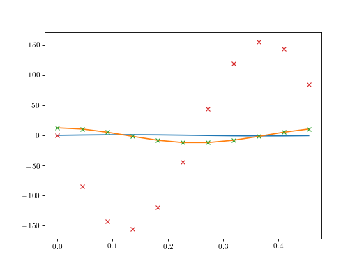

Harmonic Balance Tools (mousai.har_bal)¶
-
har_bal.harmonic_deriv(omega, r)[source]¶ Derivative of a harmonic function using frequency methods.
Returns the derivatives of a harmonic function
Parameters: omega: float
Fundamendal frequency, in rad/sec, of repeating signal
r: array_like
Array of rows of time histories to take the derivative of.The 1 axis (each row) corresponds to a time history.The length of the time histories must be an odd integer.Returns: s: array_like
Function derivatives. The 1 axis (each row) corresponds to a time history.
Notes
At this time, the length of the time histories must be an odd integer.
Examples
(Source code, png, hires.png, pdf)

{kind=link}
{kind=link}
-
har_bal.hb_so(sdfunc, x0=None, omega=1, method='newton_krylov', num_harmonics=1, num_variables=None, eqform='second_order', params={}, realify=True, **kwargs)[source]¶ Harmonic balance solver for second order ODEs.
Obtains the solution of a second-order differential equation under the presumption that the solution is harmonic.
Returns t (time), x (displacement), v (velocity), and a (acceleration) response of a second order linear ordinary differential equation defined by \(\ddot{\mathbf{x}}=f(\mathbf{x},\mathbf{v},\omega)\) or \(\dot{\mathbf{x}}=f(\mathbf{x},\omega)\).
For the state space form, the function
sdfuncshould have the form:def duff_osc_ss(x, params): # params is a dictionary of parameters omega = params['omega'] # `omega` will be put into the dictionary # for you t = params['cur_time'] # The time value is available as # `cur_time` in the dictionary return np.array([[x[1]],[-x[0]-.1*x[0]**3-.1*x[1]+1*sin(omega*t)]])
In a state space form solution, the function must take the states and the
paramsdictionary. This dictionary should be used to obtain the prescribed response frequency and the current time. These plus any other parameters are used to calculate the state derivatives which are returned by the function.For the second order form the function
sdfuncshould have the form:def duff_osc(x, v, params): # params is a dictionary of parameters omega = params['omega'] # `omega` will be put into the dictionary # for you t = params['cur_time'] # The time value is available as # `cur_time` in the dictionary return np.array([[-x-.1*x**3-.2*v+sin(omega*t)]])
In a second-order form solution the function must take the states and the
paramsdictionary. This dictionary should be used to obtain the prescribed response frequency and the current time. These plus any other parameters are used to calculate the state derivatives which are returned by the function.Parameters: sdfunc: function
For
eqform='first_order', name of function that returns column vector first derivative given x, omega and **kwargs. This is NOT a string.\(\dot{\mathbf{x}}=f(\mathbf{x},\omega)\)
For
eqform='second_order', name of function that returns column vector second derivative given x, v, omega and **kwargs. This is NOT a string.\(\ddot{\mathbf{x}}=f(\mathbf{x},\mathbf{v},\omega)\)
x0: array_like, optional
n x m array where n is the number of equations and m is the number of values representing the repeating solution. It is required that \(m = 1 + 2 num_{harmonics}\). (we will generalize allowable default values later.)
omega: float
assumed fundamental response frequency in radians per second.
method: str
Name of optimization method to be used.
num_harmonics: int, optional
Number of harmonics to presume. The omega = 0 constant term is always presumed to exist. Minimum (and default) is 1. If num_harmonics*2+1 exceeds the number of columns of x0 then x0 will be expanded, using Fourier analaysis, to include additional harmonics with the starting presumption of zero values.
num_variables: int, optional
Number of states for a state space model, or number of generalized dispacements for a second order form. If x0 is defined, num_variables is inferred. An error will result if both x0 and num_variables are left out of the function call.
eqform: str
second_orderorfirst_order.params: dict
Dictionary of parameters needed by sdfunc.
realify: boolean
Force the returned results to be real.
other: any
Other keyword arguments available to nonlinear solvers in scipy.optimize.nonlin. See Notes.
Returns: t, x, e, amps, phases: array_like
time, displacement history (time steps along columns), errors,
amps : float array
amplitudes of displacement (primary harmonic) in column vector format.
phases : float array
amplitudes of displacement (primary harmonic) in column vector format.
Notes
Calls a linear algebra function from scipy.optimize.nonlin with
newton_krylovas the default.Benefits from quasi-linear estimator for starting point.
Should gently “walk” solution up to get to nonlinearities.
- Algorithm:
- calls hb_so_err with x as the variable to solve for.
- hb_so_err uses a Fourier representation of x to obtain velocities (after an inverse fft) then calls sdfunc to determine accelerations.
- Accelerations are also obtained using a Fourier representation of x
- Error in the accelerations are the functional error used by the
nonlinear algebraic solver (default
newton_krylov) to be minimized by the solver.
Options to the nonlinear solvers can be passed in by **kwargs.
Examples
>>> import mousai as ms >>> t, x, e, amps, phases = ms.hb_so(ms.duff_osc, np.array([[0,1,-1]]), .7)
-
har_bal.solmf(x, v, M, C, K, F)[source]¶ Acceleration of second order linear matrix system.
Parameters: x, v, F : array_like
\(n\times 1\) arrays of current displacement, velocity, and Force.
M, C, K : array_like
Mass, damping, and stiffness matrices.
Returns: a : array_like
\(n\times 1\) acceleration vector
Examples
>>> import numpy as np >>> M = np.array([[2,0],[0,1]]) >>> K = np.array([[2,-1],[-1,3]]) >>> C = 0.01 * M + 0.01 * K >>> x = np.array([[1],[0]]) >>> v = np.array([[0],[10]]) >>> F = v * 0.1 >>> a = solmf(x, v, M, C, K, F) >>> print(a) [[-0.95] [ 1.6 ]]
-
har_bal.time_history(t, x, realify=True, num_time_points=200)[source]¶ Generate refined time history from harmonic balance solution.
Harmonic balance solutions presume a limited number of harmonics in the solution. The result is that the time history is usually a very limited number of values. Plotting these results implies that the solution isn’t actually a continuous one. This function fills in the gaps using the harmonics obtained in the solution.
Parameters: t: array_like
1 x m array where m is the number of values representing the repeating solution.
x: array_like
n x m array where m is the number of equations and m is the number of values representing the repeating solution.
realify: boolean
Force the returned results to be real.
num_time_points: int
number of points desired in the “smooth” time history.
Returns: t: array_like
1 x num_time_points array.
x: array_like
n x num_time_points array.
Notes
The implication of this function is that the higher harmonics that were not determined in the solution are zero. This is indeed the assumption made when setting up the harmonic balance solution. Whether this is a valid assumption is something that the user must judge when performing the solution.